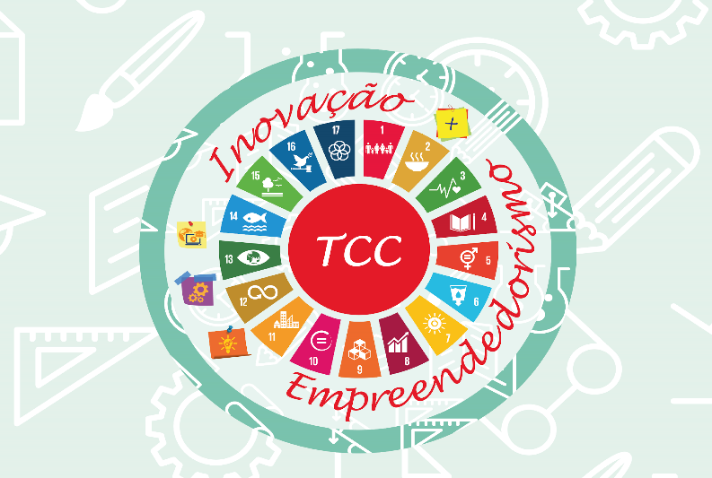

O TCC do IEMA é inspirado na solução de problemas reais do mundo que nos rodeia e é composto por três dimensões: Objetivos de Desenvolvimento Sustentável (ODS) das Nações Unidas, Inovação e Empreendedorismo. Em outras palavras, o estudante deverá problematizar um dos 17 ODS dentro da comunidade em que vive e buscar uma solução de caráter inovador e empreendedor para solucionar o problema. Eis a concepção gráfica do TCC:
Os ODS irão ajudar o estudante a identificar os problemas na comunidade em que mora. Mas antes, ele deverá conhecer o que são os ODS. Ao conhecer os ODS, o estudante irá relacioná-los com a sua realidade. Por exemplo: O ODS 11 trata sobre “Cidades e comunidades sustentáveis”. O estudante vai estudar o ODS 11, em seguida, olhar para a comunidade (escola, igreja, sua rua, etc.) e identificar onde ela Não é Sustentável.
Ao identificar tal problema, o estudante irá buscar uma solução criativa e inovadora que ajude a sua comunidade a ser mais sustentável. O aluno não irá fazer isto sozinho, uma vez que o TCC será feito em equipe de três alunos. Lembre-se:
“A cabeça pensa a partir de onde nossos pés pisam” (Boff, 2017).
Para Demo (2014), a formação pela pesquisa na Educação Básica não almeja novos fundamentos da Física. Diz o autor: “Não se espera que o aluno adquira condição tamanha de autonomia que possa, por exemplo, construir axiomas matemáticos, refazer a filosofia da linguagem, recriar sozinho as leis da física e a composição dos produtos químicos” (p. 101)
Entretanto, cabe ao aluno o exercício de problematizar os lixões e os córregos poluídos, exercitando, assim, uma educação que vá além da compreensão do conteúdo para a prova.
Dessa forma, o estudante irá propor uma solução para problemas que afligem seu bairro, sua escola, sua igreja e seu grupo de amigos. Ao ter esse problema definido, ele relacionará com os ODS. Compete ao professor orientar o estudante nesse processo: indagando, propondo leituras, explicando, ouvindo atentamente, definindo prazos de entregas, etc. Ao final do TCC, o estudante deverá apresentar um protótipo para solução do problema em conjunto com um artigo.
Durante o TCC, o estudante vai registar as fases dessa produção em um relatório, o qual ajudará na construção do artigo.
E COMO IREMOS FAZER TUDO ISSO?
Vamos mostrar nas próximas páginas.